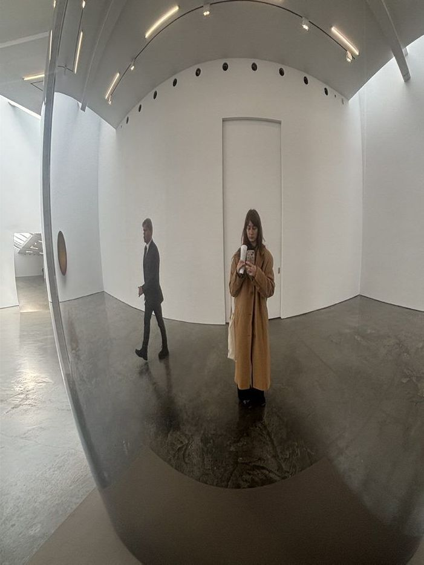
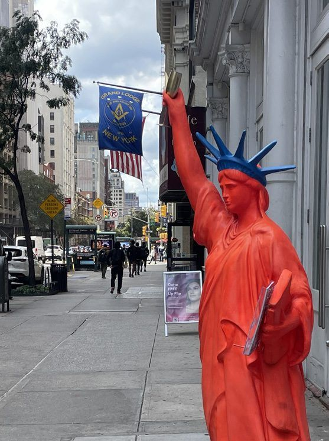
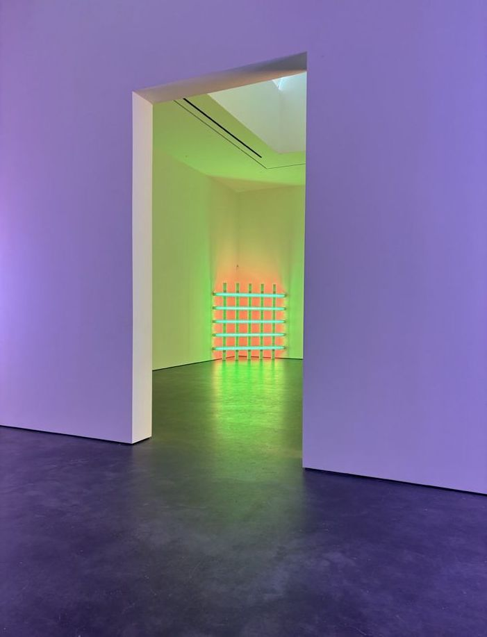
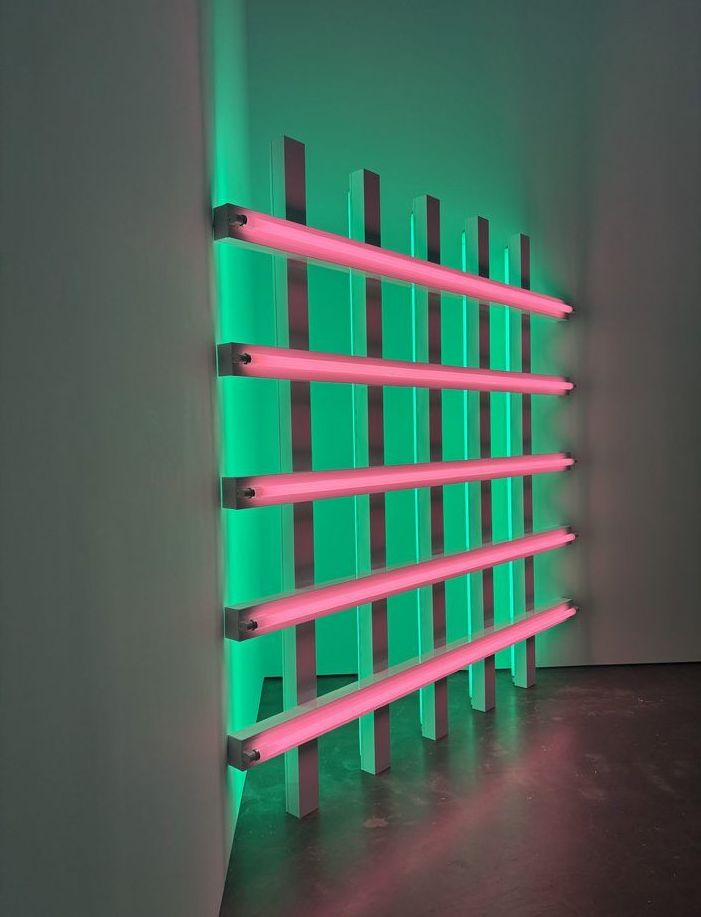
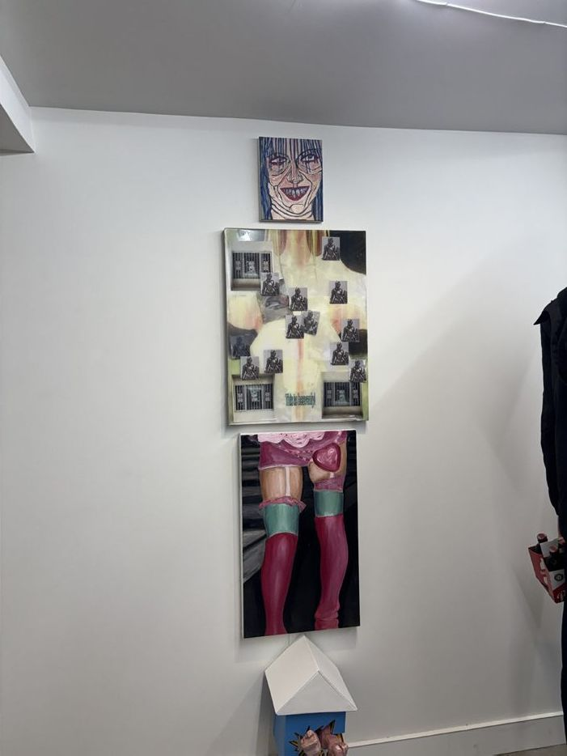
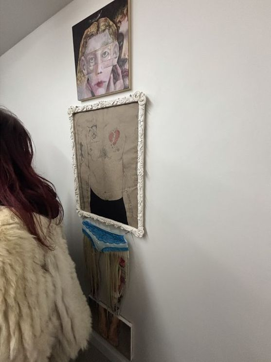
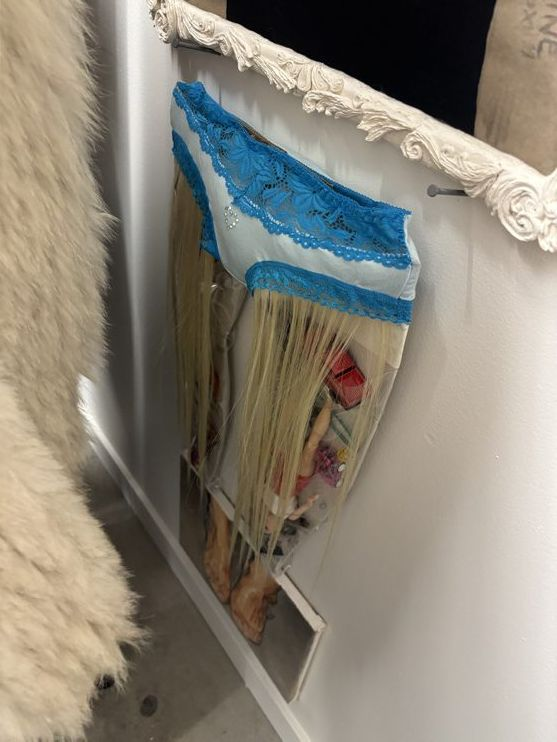
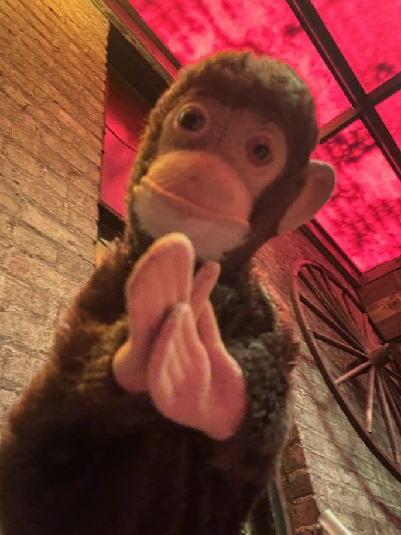
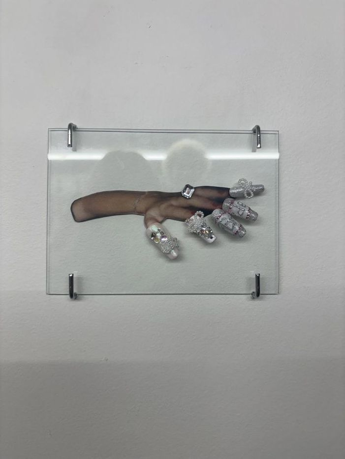

march to april, 2026

anish kapoor
The third month of the year, the first month of spring and the worst month in my opinion: march is full of suprises. I would consider march to be a miserable month that builds up hope for the future. You think; it is spring already, the weather is going to get warmer. But march slaps you in the face and gives you a blizzard. Then she pities you, your furless skin she weeps after. She gives you a sunny warm weekend then the next day is rainy again. march is a bitch, I'm sorry but it is. it is always a month full of hustle, trying to get things done. it is just a month of waiting for things to get better. It's a message from the universe that once you complete this month things are continuously gonna
get easier. Which, it does. but this one right here requires not just bodily warmth but mental and emotional stability. march is a month of refining, redefining and surviving. it stretches you in quiet ways, tests your patience in small daily frictions. it asks you to hold contradictions at once; hope and disappointment, movement and stagnation, warmth and cold. Thankfully life does give you lemons and sometimes they're sweet. Those small, unexpected moments of sweetness feel almost exaggerated against the instability of the month, like they are placed there on purpose to keep you going. i had some very nice moments this month and then maybe I'll talk about the bad news, maybe. But I got to see anish kapoor's and Jeff koons' shows this month in Chelsea. And that in itself felt like a kind of reward, like access to something larger than the day-to-day unpredictability of March. i'm having a lot

midtown
of fun seeing shows in chelsea, moma and the met and write papers on our analysis and critique. Learning the format of a formal visual and experiental analysis for artists and shows is something i always wanted to do so I'm really grateful to be learning on site here. There is something different about writing after physically being in a space, after walking around a work, after

Dan flavin
noticing how other people interact with it. the analysis becomes less abstract and more embodied. Especially after seeing both kapoor and koons shows at the same month, my perspective on these artist and their approach to fine arts changed most certainly. I feel like i always had a bias about these artists, kapoor with his blackest black and koons

Dan flavin
with his metallic balloon dogs. They defined a part of the arts where commercial success ruled. They felt almost too visible, too iconic, almost flattened by their own recognition. it's funny, because essentially i'm studying commercial arts. The arts we are talking about have the purpose of communication and profit. and, I know it is strange to say this maybe but that is okay. We gotta live! And most of the time money doesn't become hush money but gives you the opportunities of bigger stages. Seeing their work in person complicated my assumptions. the scale, the material presence, the way people orbit around the work, it made me reconsider the relationship between spectacle and substance. Maybe the spectacle is the entry point, not the conclusion. I think the most important part of seeing

exquisite corpse
gallery shows on a weekly basis for months has been understanding the defining points of why a gallery invites an artist to do a show with them. and seeing the circulation of ideas, materials, methods between artists and galleries is very, very interesting. it starts to feel less like isolated exhibitions and more like an ecosystem. The curation is curated in a broader sense. the gallery curates a show and there is a curation of galleries happening in Chelsea as well. And the more you curate the more specific it gets about what this neighbourhood wants to communicate to the world. it becomes almost like editing a publication, but spatially. deciding what conversations sit next to each other, what tensions are allowed to exist.. seeing
flavin at david zwirner, bourgeois at hauser&wirth, koons at gagosian, kapoor at lisson and more on, the scaled up, raw material is something i see as a commonality so far. there is a confidence in scale, almost insistence on presence. materials are not hiding what they are; they are exaggerated, pushed to their limits. being at dia beacon last year, I really feel like the scale and material curations become a present play that is shown these days. it’s not just about the object but about the conditions it creates—how it alters space, how it slows you down or overwhelms you. "chelsea" as in the fine arts institutions, galleries etc. in the Chelsea neighbourhood, do not direct themselves to any industries or branches of arts. all of these funded, sponsored galleries all together create a platform of what is thought to be a


not that deep gallery
common, collective voice. this moment all of these artists, editors, curators, writers, agents- everyone creates this cloud of thought, both inspired by and to inspire people of what is considered "low culture". they all position themselves in the higher grounds of what I see as circulation of culture. it’s almost infrastructural—like a system that filters, amplifies, and

Jesse's puppet monkey
redistributes meaning. on the contrary, so many others gather around to be in, and against conversation with this overruling narrative "chelsea " creates. The resistance becomes part of the system too. opposition feeds visibility. we still debate, the value of your name or the weight your idea carries? we still debate and we think maybe both feed each other.
new jersey
sometimes they don't though. sometimes the name arrives before the idea, and sometimes the idea struggles to exist without the name. that tension feels unresolved but productive. when i went to the opening reception of exquisite corpse by not that deep gallery in brooklyn, this is what i was thinking. the show consisted of almost 30 artists. each one assigned to a part of the body, they all gathered to create literal bodies of work on the walls. The work defined the position of the artist in the show, not their names. there was something refreshing in that structure, almost democratic but still curated. although I started to see a cohesion between each work. each had a distinct yet when all together, a very common voice to them. it made me think about authorship

olympe gaultier
differently—less about individual ownership and more about collective construction. going back to this idea of a platform and the pyramids of platforms in the art scene, the show positioned itself as something powerful and new for me. The culture and politics behind art scenes have always been based on name value for the most part. the show was so distinct and each artist was so expressive that the name value blended into this show. they all created an experience more dynamic and effective than that. it felt less like consuming separate works and more like entering a system of relationships. the identity of a gallery is essential to differentiate yourself in a highly saturated market it is. from
the physical experience you provide with your space to your shows, it is also a matter of how you are marketing yourself to audiences and potential buyers. but there also seems to be a distinction between whether a gallery is financially successful or culturally significant. there are so many galleries that are basically situtated as furniture shops all around. these kinds of galleries also tend to be around actual furniture stores. they blur into commercial environments, where art becomes decor, stripped of friction. and then there are those who bring over an audience of people interested in this particular culture but tend not to buy. spaces that function almost like intellectual hubs rather than marketplaces. But a gallery has to sell to survive, a gallery has to be culturally significant to thrive. how do one achieve both? that question seems to sit at the center of everything i’m seeing. the immense skill to network and the talent to sell, becomes important in that regard. but maybe it’s also about timing, about reading the moment correctly, about positioning yourself within that larger cloud of thought without dissolving into it. maybe it’s about creating an experience that people feel compelled to return to, not just purchase from. And maybe, it’s about enduring instability long enough to arrive at something more stable, more defined.